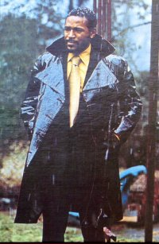

Marvin Gaye: Biography
"Wonderful One"
David Ritz
(text ripped from the booklet of the CD “The Very Best Of Marvin Gaye”.)
Marvin Gaye's extraordinary career matched his extraordinary life, a mixture of blessings and banes, dazzling success and inscrutable pain. His biography and discography are twin reflections of the same dualty: the artistic and personal struggle to heal the split between head and heart, flesh and spirit, ego and God. Meanwhile, the music lives on for the pleasures of its beauty and the marvel that was Marvin's voice.
Marvin's work divides along decades - the sixties when he hit as a commercial if somewhat rebellious artist, a brilliant product of the Motown assembly line; the seventies when he matured as an independent force, a self-produced self-reflective auteur who both rose to the challenge and fell to the temptations of his times; and the early eighties when, for a brief moment, he came roaring back on the scene for the final, tragic act of his spectacular drama.
The seeds of his discontent were sown in childhood. Born April 2, 1939, in Washington, D.C., Marvin Pentz Gaye, Jr. was the oldest son of a charismatic storefront preacher. The church was joyful, the holy roller music intoxicating; but the church was severe, and its no-drinking, no-dancing, no-nonsense regulations strict. The church was also eccentric - a small Christian subculture which celebrated the Jewish High Holy Days.
The church set Marvin, his brother and two sisters apart from ther peers. Marvin's mother worked as a domestic and carried the burden of the family's finances. The Reverend Gay - Marvin added the “e” later - worked as a part-time postal clerk and often not at all. A scholary but violent man, he beat his children for minor infractions and friolous misbehaviour. Marvin rebelled - Marvin would always rebel - and paid the price in corporal punishment.
He quit high school before graduation and joined the Air Force, only to be discharged. “My discharge was honorable”, Marvin told me, “although it plainly stated, 'Marvin Gay cannot adjust to regimentation and authourity.'” After working with seminal rocker Bo Diddley, he joined the Moonglows, a quintessential five-part harmony group. It was the end of the fifties, and Marvin's impressions of the dawning Golden Age of Doo-Wop - with its lush romanticism, its otherworldliness, its idealization of women and pure melodic beauty - would prove powerful and permanent.
Harvey Fuqua had founded and led the Moonglows. A superlative writer and musician, he became Marvin's guru father-figure. When the group broke up, it was Fuqua who led Gaye to Detroit and Berry Gordy's just-born Motown Records. Marvin wanted in - into the studio and into the Gordy family. Gaye got what he wanted, marrying Berry's sister Anna, a woman 17 years his senior, and recording an initial series of records which ran contrary to Gordy's notion of selling black dance music to white teenagers.
Marvin dreamed of becoming a crooner in the silky-smooth style of Nat Cole, of besting Frank Sinatra and Perry Como. Shy but ambitious, mellow but fearful, broodingly serious, the singer wanted to sit on a stool, smoke a cigarette, nurse a martini and interpret the ballads of Gershwin and Porter. Gordy indulged Marvin's fantasy, even producing a number of his early efforts. But Marvin and Motown failed to crack the adult market. Gaye's destiny was Top Ten.
Seeing his colleagues - Mary Wells, the Marvelettes, the Miracles - score so resoundingly, Gaye jumped into the game with “Stubborn Kind of Fellow”, a self-penned piece of autobiography that established his ability to rock in the rhythms of Young America. The song hit in 1962, as did a long series of others - “Pride and Joy”, “Can I Get A Witness?”, “I'll Be Doggone”, “Ain't that Peculiar”. As a writer, Marvin contributed to “Dancing In The Street”, the covertly revolutionary anthem by Martha Reeves and the Vandellas.
Not only did Gaye score as a solo artist, but proved himself a polished duet partner. “What's the Matter With You, Baby” with Mary Wells, “It Takes Two” with Diana Ross enjoyed widespread popularity. But it was his pairing with Tammi Terrel that created a series of classics - “You're All I Need to Get By”, “Ain't Nothing Like the Real Thing”, “You Ain't Livin' Till You're Lovin'”, “Good Lovin' Ain't Easy to Come By” - remarkable for their sweeping lyricism.
Norman Whitfield became Mavin's main motivator in the mid-to-late sixties. Their relationship was difficult. Two head-strong men who nearly came to blows, they created sounds combining passionate yearning and restless anger. Whitfield's songs appealed to Gaye in their reflection of the turmoil of Marvin's marriage to Anna. And their most formidable collaboration, “I Heard It Through The Grapevine”, expressed an anguish not before heard in Marvin's voice.
At the start of a new decade and on the strength of new sales records, Marvin articulated his declaration of independence in 1971. Now he would produce himself, singing his own songs, setting his own agenda. The result was a landmark in world pop, “What's Going On”, a stunningly complex construct - and one of the first concept albums - in which Gaye's views of Vietnam, ecology, racism and religion are fashioned into haunting musical modes.
Marvin loved to shock; he relished surprise. Who else would move from a masterwork of high social consciousness to a celebration of wild eroticism? The shift from “What's Going On” to “Let's Get It On” in 1973 delighted Gaye's fans and served to strengthen his image as both unpredictable iconoclast and mysterious love man. While making “Let's Get It On”, 33 year-old Marvin met Janis Hunter who, at 16, would become the second great love of his life. (Marvin and Anna adopted one son, Marvin III; before divorcing Anna, Marvin whould have two children with Janis, Frankie and Nona, now a singer in her own right).
Gaye continued exploring notions of sexuality in 1976 with “I Want You”, a suite of overwhelming libidinous energy. A year later, he hit again with “Got to Give It Up”, the seductive homegrown dance groove which became a successful oddity in the age of disco. Ironically, the song speaks to Marvin's shyness and obsessional fear of dancing.
His obsession with autobiography with “Here, My Dear”, in 1978, the exquisite epic document of the decay of his marriage to Anna. Its theme, “When Did You Stop Loving Me, When Did I Stop Loving You”, was esepecially poignant; by the time the album was out, Marvin's second marriage was also in shambles, precipitating a collapse in his psyche and career.
Inside Marvin's heart and head, wars raged on. He talked about giving up music and becoming a monk. He talked about being a bigger sex symbol than Elvis. He poured his agonized conflicts into his final album for Motown in 1981, “In Our Lifetime”, and nearly hit bottom in London. His salvation, if only temporary, came with a move to Ostend, Belgium, where he and I, based on arhythm track by Odell Brown, wrote the lyrics to “Sexual Healing”. As his biographer, it was my way of suggesting what I beleived he needed, a reconciliation of the confusion, fostered in childhood, between pleasure and pain.
With a new CBS contract and “Sexual Healing” topping the charts, Marvin ended three years of exile in 1982. His comeback was triumphant, but quickly turned tragic. His dependency on drugs worsened, his emotional stability collapsed, his humor and easy charm gave way to paranoia and fear.
On April 1, 1984, in his parents Los Angeles home, Marvin physically attacked his father for verbally abusing his mother. Gay Sr. responded by shooting his son to death - using a gun that Marvin himself had given him four months earlier - thus putting to rest a bitter, life-long Oedipal struggle.
Since then, the power and reach of Marvin's music has increased. His legasy as artistic rebel and sensual romanticist is secure. His songs are loved the world over, sung and resung by younger generations who feel the sincerity of his struggle and the joy of his spirit. Marvin Gaye is very much alive.
(David Ritz is the Author of “Divided Soul: The Life of Marvin Gaye”, as well as biographies of Ray Charles, Smokey Robinson, Etta James and producer Jerry Wexler. His most recent novel is “Take It Off, Take It All Off!”.)